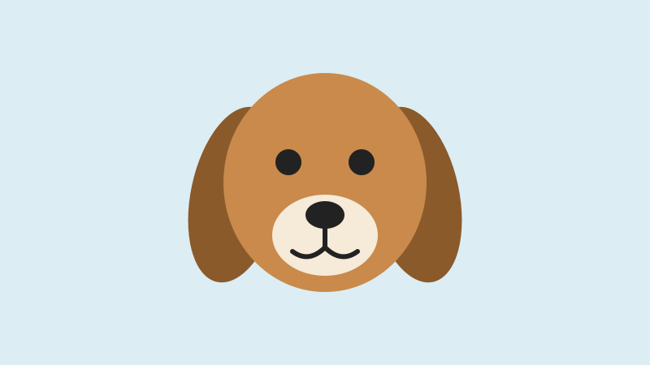
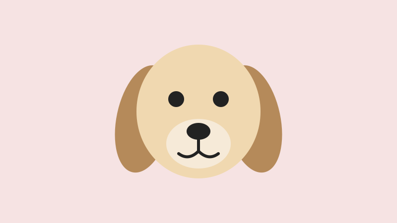
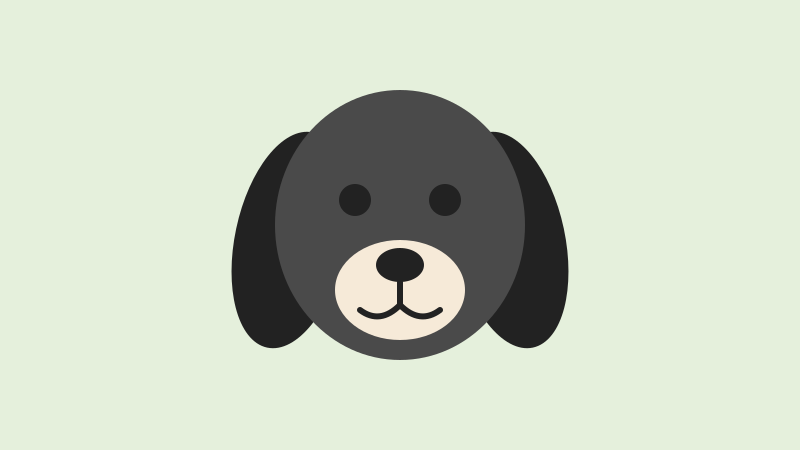
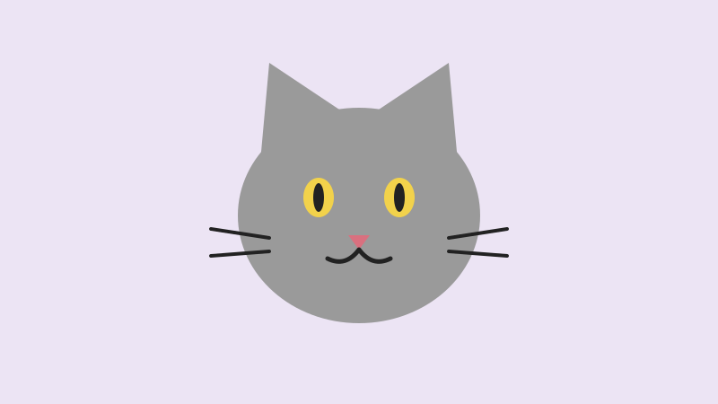
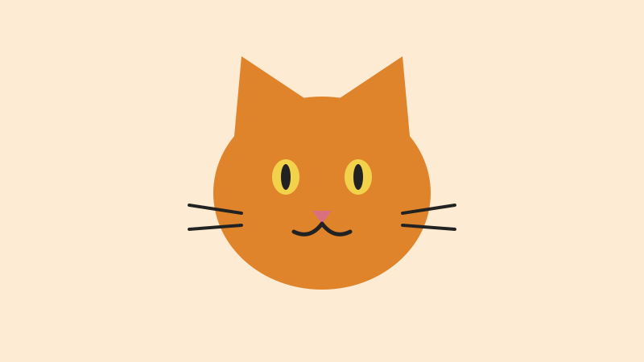
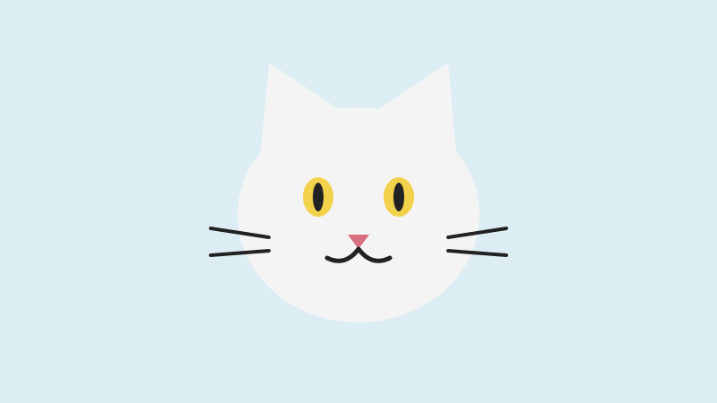

Teddy
- Espécie: Cachorro
- Idade: 2 anos
- Porte: Grande
- Sexo: Macho
Brincalhão e ótimo com crianças.
Quero adotar o TeddyEstes amigos estão prontos para ganhar uma família. Todos são castrados, vacinados e microchipados.

Brincalhão e ótimo com crianças.
Quero adotar o Teddy
Carinhoso e calmo, ideal para apartamento.
Quero adotar o Ralf
Cheio de energia, adora passear.
Quero adotar o Bola
Curiosa e muito sociável.
Quero adotar a Mia
Tranquilo e companheiro.
Quero adotar o Simba
Independente e dócil.
Quero adotar a Nina